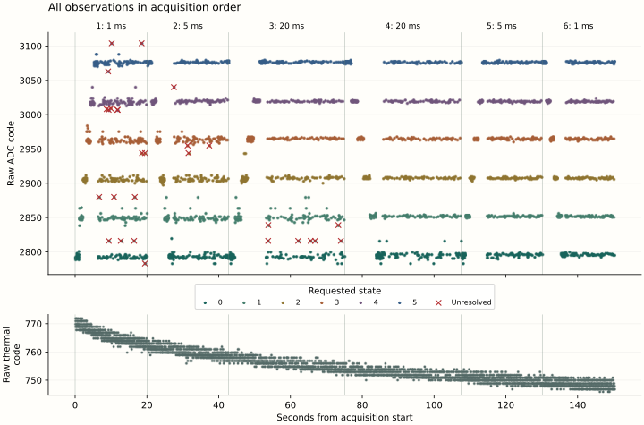
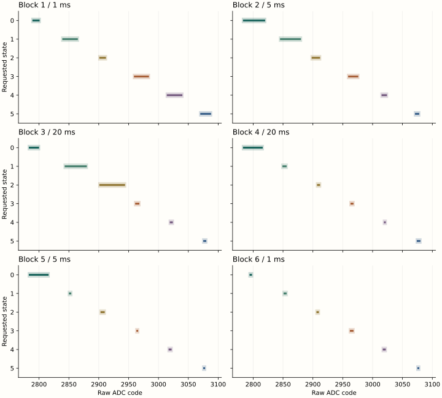

Physical results
Acquisition completed; none of the three delay conditions met its full paired-block recognition criterion. The returned journal contains all 3,888 scheduled observations: 1,296 training and 2,592 held-out. Every block produced disjoint frozen bands. Held-out recognition yielded 2,564 correct, 0 wrong and 28 unresolved classifications. All 28 unresolved readings occurred in blocks 1–3; blocks 4–6 each recognized 432/432 readings.
| Block | Delay / ms | Training / bands | Correct | Wrong | Unresolved | Block criterion |
|---|---|---|---|---|---|---|
| 1 | 1 | 216 / disjoint | 415 | 0 | 17 | Not met |
| 2 | 5 | 216 / disjoint | 428 | 0 | 4 | Not met |
| 3 | 20 | 216 / disjoint | 425 | 0 | 7 | Not met |
| 4 | 20 | 216 / disjoint | 432 | 0 | 0 | Met |
| 5 | 5 | 216 / disjoint | 432 | 0 | 0 | Met |
| 6 | 1 | 216 / disjoint | 432 | 0 | 0 | Met |
Across both repetitions, 1 ms yielded 847/864 correct and 17 unresolved; 5 ms yielded 860/864 correct and 4 unresolved; 20 ms yielded 857/864 correct and 7 unresolved. There were no wrong-state classifications or unavailable classifications. Each paired condition contains an unsuccessful first block, so none qualifies on the declared criterion.
All 3,888 samples and operating checks reported success. Every requested control matched both register readbacks. All six block restorations and final pin release reported success. These observations apply to the recorded checks; they do not measure continuous conditions between them.
Decision and evidence
Prioritize six-state development: the previous six-state training bands were disjoint, while thirteen adjacent sixteen-state band pairs overlapped. Six-state validation still included one wrong and fourteen unresolved classifications. Sixteen-state operation remains a research condition; this decision does not establish a universal cardinality limit.
Exploratory inspection found thirteen of the fifteen unsuccessful six-state classifications at raw codes divisible by sixteen; the other two returned 2,783. Four occurred after an observation with the same requested control. These findings motivate acquisition diagnostics; they do not identify their cause. Previous physical result.
Declared method
Use the same six control codes, 90, 93, 96, 99, 102 and 105, the same electrical access, bus dwell and operating guards. Counts and intervals here are decimal. Compare pre-ADC delays of 1, 5 and 20 ms in block order 1, 5, 20, 20, 5, 1 ms. The paired ordering exposes some drift; it does not remove time-dependent confounding.
- In each block, hold each control for 36 consecutive conversions. Visit controls ascending in even-numbered blocks and descending in odd-numbered blocks (zero-based). Preserve every raw observation.
- Build closed training bands from the minima and maxima with the unchanged two-count guard. Freeze successful bands before held-out observations.
- Exercise all 36 ordered transitions, including self-transitions, six times. Record predecessor and destination separately: 432 held-out observations per block.
- Retain the conversion poll count, first and final polling values, conversion status, both result octets and timestamps. Before status cleanup, read the result octets a second time without triggering another conversion. The first pair supplies the existing sample/recognition path; the second is diagnostic.
- Restore the original control after each block. Hardware, condition, transport or restoration failure stops acquisition and preserves the attempted prefix.
The six blocks contain 3,888 observations: 1,296 training and 2,592 held-out. Calibration failure is recorded per block; subsequent raw observations continue with recognition unavailable for that block. No overlapping or replacement band is used to classify them.
The additional result reads change the acquisition timing relative to the previous experiment. All new delay conditions use the same instrumentation. Logged timestamps distinguish the programmed pre-ADC delay from trigger, conversion polling, result-read and cleanup intervals.
Execution and recording
The existing ROM/EEPROM loader starts the AArch64 payload. Project-owned literal SEIGRASM opcodes establish entry, SD access, GPIO takeover, I2C transactions, ADC acquisition, supervision, calibration, recognition and restoration. New native scheduling, delay selection and transaction auditing extend those operations. PC Python copies literal opcodes and data into the image, validates supplied-device execution and reads preserved evidence. It does not implement target acquisition or compile its instructions.
SGDATA01 records configuration, three electrical checkpoints, the acquisition report, six band/status areas, 64-word observation rows and a final trial report. The first 32 row words retain the existing observation schema; the following 32 contain acquisition diagnostics. Empty fields require availability/status interpretation. The journal uses reserved SD sectors independently of the boot FAT volume.
| Operation | Source and entry offset | Effect |
|---|---|---|
| Schedule | sequence, 0x160 | Six blocks of 648 observations. |
| Acquisition | acquire, 0x30c | 64-word rows; calibration status, availability and counter in band words 16–18. |
| Delay selection | dwell, 0 | Round the requested microseconds upward to observed counter ticks, bind the row trace and invoke supervision. |
| ADC audit | audit, 0 / 4 / 8 | Acquisition wrapper and read/write adapters. The annotated source defines all 32 trace words and availability flags. |
| Persistence | trial, 0x144 | At most 24,932 SGDATA01 sectors; the observation count determines the recovered prefix. |
| Independent assessment | PC reader | Verify journal integrity, reconstruct training bands and classifications, and compare first/second result pairs. |
The first acquisition result is preserved even if a later register read or cleanup fails. Availability alone does not imply a successful sample. When an operating guard prevents the ADC call, its trace schema is zero and the programmed delay remains recorded. No firmware service is called by this acquisition path; concurrent firmware activity is not excluded by that fact.
Assessment
Report raw-code distributions at fixed controls, first/second result-pair disagreements, transport and ADC status, observed timing, thermal/frequency observations, frozen intervals, wrong classifications and unresolved or unavailable recognition separately for every block. Repeated register reads are not independent conversions. Their agreement cannot exclude a shared acquisition defect; disagreement establishes only that the two observations differ.
A delay condition meets the bounded recognition criterion only if both associated blocks calibrate, all 864 held-out observations are present and correctly recognized, all samples and operating checks succeed, and restoration succeeds. Diagnostic result-pair disagreements prevent acquisition-integrity qualification. Final-sector recovery does not prove completion of its subsequent target readback. Preserve every failure and report the exact recording boundary.
Do not tune or widen bands from held-out results, discard outliers, average away variation or choose a winning delay without reporting the other conditions. A promising condition requires confirmation in separately recorded boots. Absolute voltage/current accuracy, firmware exclusion, multivalued CPU arithmetic and Hyphos-made Seigsit creation are outside this result.
Acquisition diagnostics and timing
The first and repeated ADC result pairs agreed in all 3,888 observations, with no missing pair diagnostics. The second high-byte read followed the first by 4.439–4.609 ms. Each conversion-control poll returned zero on its first read; the retained conversion-status value was one throughout. The recorded polling therefore does not show a busy-to-ready transition. Agreement between repeated register reads does not independently demonstrate conversion freshness or exclude a shared acquisition defect.
Programmed settling intervals were retained and observed: 1.000019–1.000463 ms, 5.000019–5.000556 ms and 20.000019–20.000519 ms. ADC call durations spanned 22.149–22.351 ms. Acquisition took 150.243676 s. The final trial section began 1,131.935728 s after trial entry (18 min 51.94 s); this includes journal writing. Counter frequency was 54,000,000 Hz.
Recorded CPU-frequency observations span 1,499,969,668–1,500,028,881 Hz. Thermal status retained its validity bits; extracted ten-bit thermal codes span 746–772. Raw codes are reported without a board-calibrated voltage or temperature conversion.


Exploratory inspection finds 18 of 28 unresolved codes divisible by sixteen; eight unresolved observations followed the same requested control as the preceding observation. These are descriptive associations. No value was removed, substituted or used to retune a band.
Interpretation and next experiment
The complete native sequence and recoverable journal are physically evidenced for this candidate. Six disjoint training bands were established in every block, and the last 1,296 held-out observations were correctly recognized. The result strengthens the case for continuing six-state development while retaining the failed paired-condition criteria.
Longer pre-ADC delay alone does not explain the outcome: the second 20 ms block passed after the first failed, and the final 1 ms block also passed. Delay, time since acquisition began, thermal history, training direction and independently fitted bands are not separated by this single sequence. Stabilization with elapsed operation is a hypothesis, not an established cause. Repeated byte-pair agreement narrows the observed failure modes but does not qualify absolute ADC accuracy.
Fixed-delay repeatability: hold the pre-ADC delay at 1 ms and repeat the same training and transition blocks across separately recorded boots, preserving early observations and a fixed observation window. Control training direction and workload, retain the existing guards and diagnostics, and compare early and later blocks before introducing a warm-up rule.
Returned evidence
Read-only acquisition on 24 September 2026 produced two matching 67,108,864-byte reads. All 24,932 occupied journal sectors passed identity, sequence, padding and checksum validation; 7,772 empty reservations remained unchanged. Boot payload and configuration contents match the installed candidate. Seven changed sectors outside the journal are in the FAT volume, which also contains a System Volume Information directory; this observation does not attribute the changes to the target.
Raw capture SHA-256: 1dc6edb019b5d8df2d8dd8d27002d291ffe59ac0cd4597763b7efb65e2407547
The final trial record is recovered. Its subsequent target readback is not evidenced by that record. The prescribed power window was 30 minutes; actual total power-on duration and boot count were not separately recorded. Elapsed times above come from the target counters.
SD preparation and procedure
Candidate E38EC009F6E6 was written to the identified project SD on 24 September 2026. A reopened-device readback of all 67,108,864 written bytes matched the prepared image. All 183 supplied-device software checks passed with unchanged sources. The returned acquisition is reported above.
Image SHA-256: 6cb1cb72a406cb39b41b68fafc6e890acff4d5daf6c1b99795e18b1661c7a9e3
- Safely eject the SD from the PC and insert it into the powered-off testing Pi.
- Power the Pi once and leave it running uninterrupted for 30 minutes. The image acquires once, attempts restoration, writes its records and parks; additional boots are not part of this acquisition.
- Power off before removing the SD. Return it to the PC for read-only acquisition and assessment.
The 30-minute observation window allows for acquisition and the larger journal, using the preceding run's recording duration as a planning reference. It is not a measured completion time or a completion signal. The returned journal and counters determine the recovered execution boundary.
Acquisition uses the read-only SD reader to preserve two matching reads before assessment with the schema-2 reader. Preserve incomplete records as well as completed results. The installation backup matched the already preserved preceding return byte for byte; no earlier evidence was replaced.